↑33%
Revenue per claim, INR 90 to 120
A 4-bucket layout was hiding a multi-stage, two-team operation across 35+ insurance payers. Nobody had fixed it because nobody had asked how hospital teams actually work. We did.
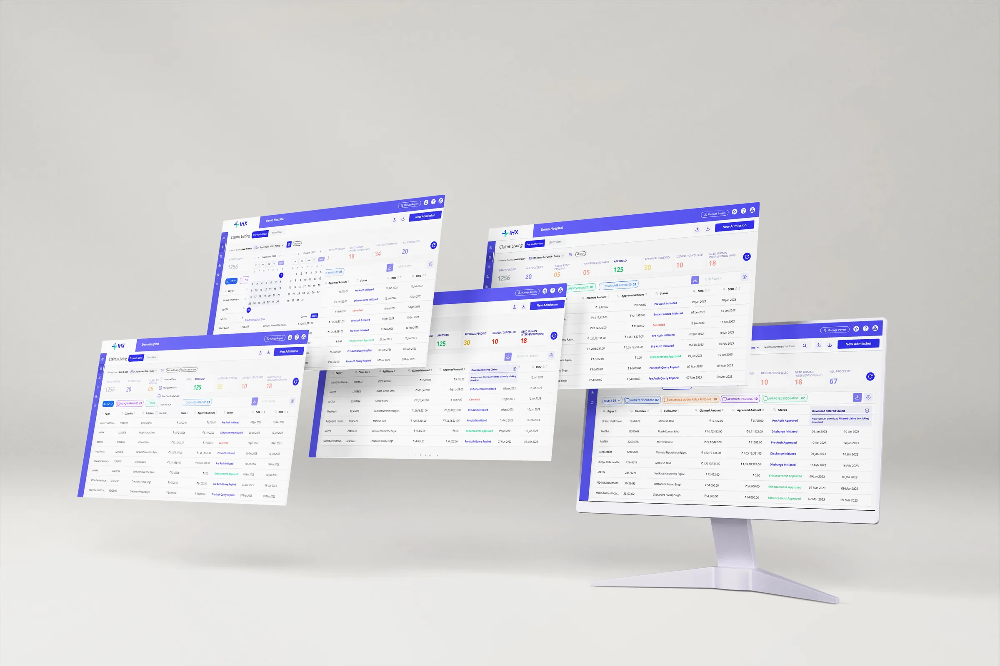
A 4-bucket layout was hiding a multi-stage, two-team operation across 35+ payers. The brief said redesign the UI. The real problem was information architecture.
Hotjar showed a cold table and heat on search. 80%+ of column searches used two parameters: users searched because the buckets did not work.
Separate PA View and Claim View, each with its own buckets, secondary filters and scoped search. The same pattern now carries five more modules.
↑33% revenue per claim, INR 90 to 120. Time on task 3.23 → 1.56 min, a 51% reduction. 3 group hospital contracts secured.
Use data to answer design questions, and make platform decisions that hold for everyone, not just the loudest user.
The digital backbone for hospital insurance operations across India. Hospitals manage the full claim lifecycle without logging into 35+ different insurer portals.
Of 35 payers: 7 via direct API · 28 via RPA and email extraction. When automation fails, claims disappear. The hospital has zero visibility. We had to design for that failure mode.
The digital backbone for hospital insurance operations across India. Hospitals manage the full claim lifecycle without logging into 35+ different insurer portals.
"The platform had been inherited from a parent insurance company. When IHX became its own entity, nobody had gone back and asked how hospital teams actually work. The screen reflected the logic of the company that built it, not the people using it."
Hotjar session recordings, Google Analytics event data, and user feedback direct and indirect routed through account managers gave three different angles on the same problem.
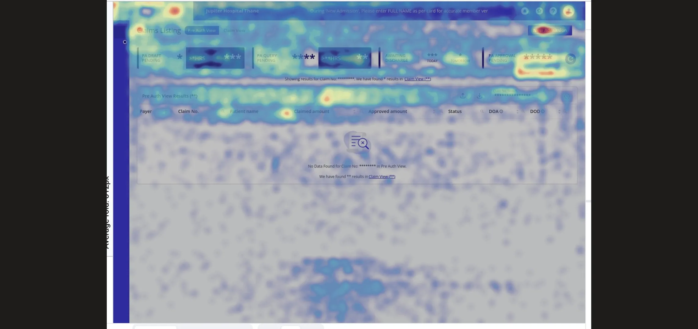
The heatmap showed heat concentrated at the top of the screen. New Admission, the search fields, and the Approval Pending bucket. The table body was cold. Users were not browsing. They were searching.
Of all column level searches used just 2 parameters: Patient Name, Claim Number. UTR had low usage but stays essential for Claim team
Reading across both sources (the cold table in Hotjar and 42% of search events concentrated on just two parameters in GA), the pattern points to one conclusion: users were not finding what they needed through the bucket structure. They were relying on search as a workaround.
"Our claims are all mixed up. Patients come and ask us whats the status, i have to search the claim every time, we are really busy you know ?"
"So much work! I keep searching for claims ready for discharge. If I miss one, patient discharge gets delayed and my supervisor scolds me"
"Hospitals scold us asking why are we paying, why cant you guys add global search feature ?"
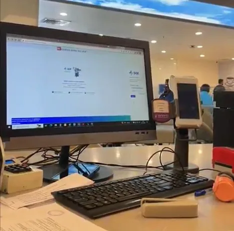
I spoke with account managers, sat with the PM, and had direct conversations with hospital staff. What I found was two distinct operations, each with different pressures, timelines, and a completely different relationship with the platform.
The users work in a high pressure, highly sensitive environment. The user faces high cognitive load: talking to multiple patients, submitting cases, and answering queries by coordinating with department heads. They are easily frustrated when the platform adds to that load instead of reducing it.
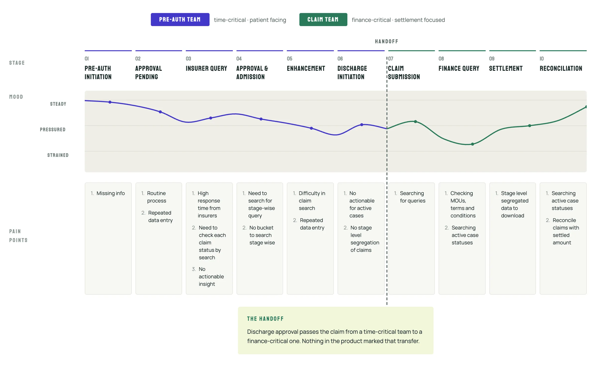
Two teams. Two urgency profiles. Two completely different reasons to open the platform. The old UI treated them as one user with one need.
The problems were not fixable at the surface because the surface was built on the wrong model. I had two options. Improve the existing screen or restructure the underlying information architecture. I chose the harder one.
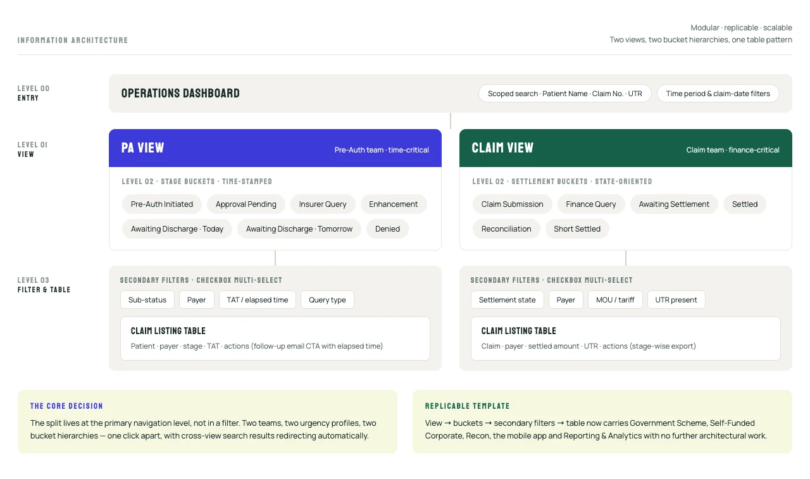
The PA View / Claim View template with nested bucket, secondary filter, and table became the foundation for the Government Scheme module, Self-Funded Corporate module, Recon module, IHX Nucleus mobile app, and the Reporting & Analytics module, all on the same pattern without additional architectural work.
The problems were not fixable at the surface because the surface was built on the wrong model. I had two options. Improve the existing screen or restructure the underlying information architecture. I chose the harder one.
Two tabs, two user groups, two bucket hierarchies. Pre-Auth buckets are time-stamped: Awaiting Discharge shows today and tomorrow separately. Claims buckets are settlement-state-oriented. Navigation is a single click; cross-view search results redirect automatically.
Core IA Decision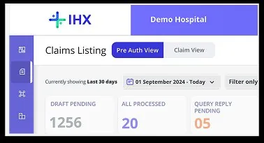
The bucket card (primary label, count, urgency indicator, secondary filter chips) communicates stage, volume, and action at a glance. Colour coding is consistent: indigo for approval states, amber for queries, teal for discharge, red for denied. The same component was reused across PA View, Claim View, Government Scheme, Self-Funded Corporate, Recon Module, IHX Mobile App, and Reporting & Analytics, with no additional design or dev work.
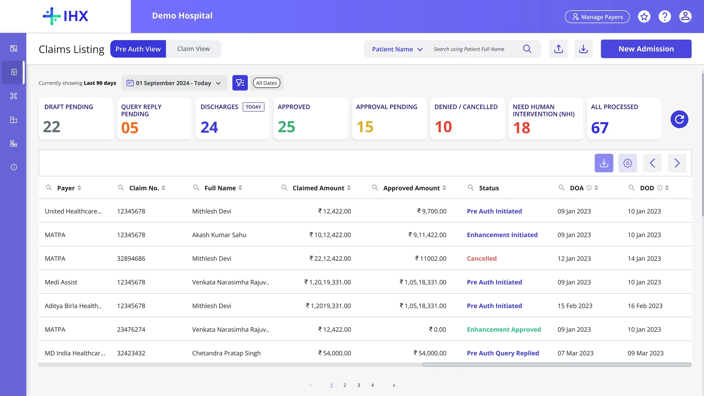
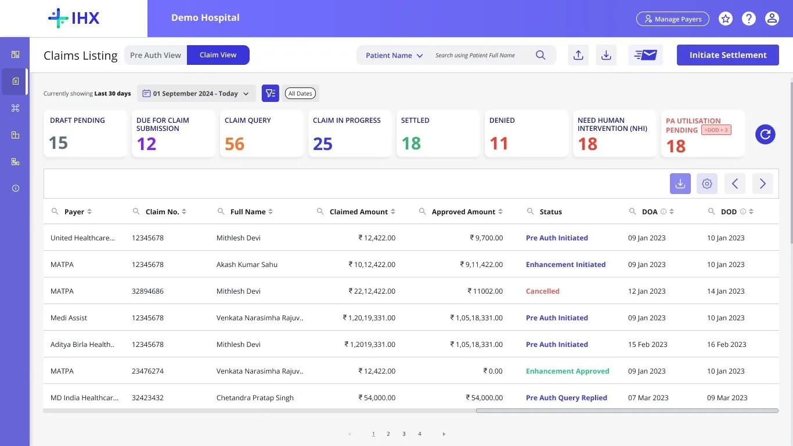
Initial design used horizontal tag chips, clean for single selections. Testing revealed supervisors needed to select multiple statuses simultaneously. Evolved to checkbox-based multi-select in a dropdown, which serves both the staff member needing a focused filter and the supervisor needing a cross-status overview.
Testing-Driven ChangeSplitting views created a problem. A Claim Number search in Claim View will return empty results because the claim lived in Pre-Auth View. Fix: when a search returns no results, the platform shows how many results exist in the other view with a direct link to switch. One line of copy. Now one of the most-used interaction patterns post-launch.
Core Design Decision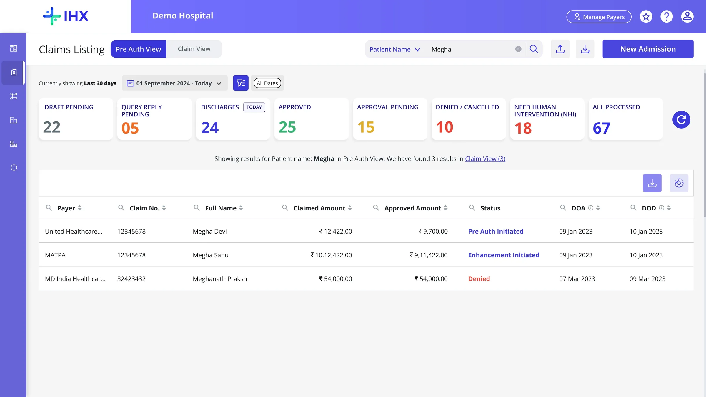
One of the points users were leaving the platform was to follow up with payers on delay in approval pending cases. A feature was introduced: email follow up through CTA under actions column inside the claim listing screen against cases along with the elapsed time.
Platform Stickiness FeatureSearching claims by patient name returned everything (claims from origin onwards), forcing users to manually sift through noise. We added a time period and date filter with hierarchical claim date types, letting users surface only relevant records.
Testing-Driven ChangeFour situations from this project where the decision was not straightforward.
Search decision came from GA. Stakeholder pushback was settled by cohort testing. If I can get data, I get data first.
One hospital's workflow preference cannot drive structural changes to a platform used by thousands.
Bulk Settlement was ready. It was deliberately deprioritised and added to the v2.
Four situations from this project where the decision was not straightforward.
INR 90 to 120 per claim on one enterprise hospital contract, with the new Ops Dashboard as a premium feature
Group hospital contracts secured. The follow-up feature was the dealbreaker
Improved customer satisfaction post-launch
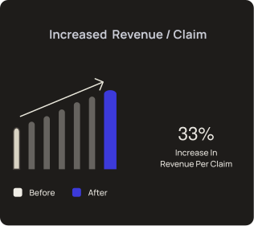
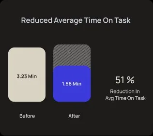
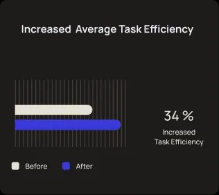
Diving deep into the journey to capture all frustrations and requirements before designing. The brief was wrong. The Hotjar data told a different story.
Test, listen, and iterate. Prioritise usability: aesthetics come second to function. The multi-select filter was a testing discovery, not an assumption.
Make design choices based on data, user feedback, and business goals, not just intuition. The scoped search solution came directly from GA event data.
Open to product design roles and contract work.
Download resume
"If there's a query pending at the discharge stage, I don't even get to know. I can't tell my team to start working on it."